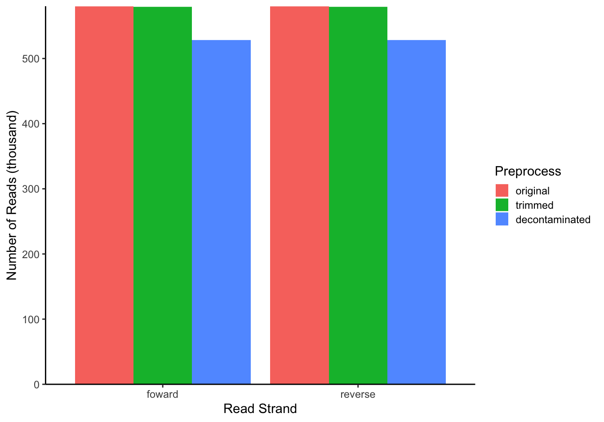

1 Standard Sequence Preprocessing
At this point we are aware of the preprocessing and bioinformatics tools needed to getting started with microbiome data analysis. We assume that the tools are already installed. Now it is time to use them to:
- Get simple statistics.
- Check the quality of the reads.
- Create summary report of quality metrics.
- Trim poor read at a user-specified cutoff.
- Remove contaminants.
1.1 Original read statistics
Tool: SeqKit.
mkdir -p data
mkdir -p data/stats1
seqkit stat *.fastq.gz >data/stats1/seqkit_stats.txt1.3 Summary of initial read quality scores
Tool: MultQC.
mkdir data/multiqc1
multiqc -f --data-dir data/fastqc1 -o data/multiqc1 --exportPlots from
multiqcare exported tomultiqc_plotsfolder.

Original: Mean quality scores

Original: Per sequence quality scores
1.4 Trimming poor reads
- Using
bbduk.shfrom bbmap platform - We use
-Xmx4gswitch to tell Java how much memory (heap size) to use, in this demo is 4 GB. - Note that we will use a
for loopto specify the file name pattern to look for. Some files may contain different patterns containingR1_001.fastq.gz. Here we use files downloaded from NCBI-SRA and looks likeSRR7450758_1.fastq.gz. - Then we will rerun
seqkit stat,fastqcandmultiqcon the trimmed reads.
for i in `ls -1 *_1.fastq.gz | sed 's/_1.fastq.gz//'`
do
bbduk.sh -Xmx4g in1=$i\_1.fastq.gz in2=$i\_2.fastq.gz out1=data/trimmed/$i\_1.fastq.gz out2=data/trimmed/$i\_2.fastq.gz qtrim=r trimq=25 overwrite=True
donemkdir -p data/stats2
seqkit stat data/trimmed/*.fastq.gz >data/stats2/seqkit_stats.txt
mkdir data/fastqc2
fastqc data/trimmed/*.fastq.gz -o data/fastqc2
mkdir data/multiqc2
multiqc -f --data-dir data/fastqc2 -o data/multiqc2 --export
Trimmed: Mean quality scores

Trimmed: Per sequence quality scores
1.5 Read decontamination
- Using
bbduk.shon trimmed reads. - This will remove some contamination (if found), e.g. phiX Control reads.
- Then we will rerun
seqkit stat,fastqcandmultiqcon the decontaminated reads.
for i in `ls -1 *_1.fastq.gz | sed 's/_1.fastq.gz//'`
do
bbduk.sh -Xmx4g in1=data/trimmed/$i\_1.fastq.gz in2=data/trimmed/$i\_2.fastq.gz out1=data/decontam/$i\_1.fastq.gz out2=data/decontam/$i\_2.fastq.gz outm1=data/decontam/matchedphix/$i\_1.fastq.gz outm2=data/decontam/matchedphix/$i\_2.fastq.gz ref=~/bbmap/resources/phix174_ill.ref.fa.gz k=31 hdist=1 overwrite=True
donemkdir -p data/stats3
seqkit stat data/decontam/*.fastq.gz >data/stats3/seqkit_stats.txt
mkdir data/fastqc3
fastqc data/decontam/*.fastq.gz -o data/fastqc3
mkdir data/multiqc3
multiqc -f --data-dir data/fastqc3 -o data/multiqc3 --export
Decontaminated: Mean quality scores

Decontaminated: Per sequence quality scores
1.6 Merged and compare preprocessed reads
library(tidyverse, suppressPackageStartupMessages())
library(ggtext)
stats1 <- read_table("data/stats1/seqkit_stats.txt", show_col_types = F) %>%
mutate(file = str_replace_all(file, ".*/", "")) %>%
select(file, original = num_seqs)
stats2 <- read_table("data/stats2/seqkit_stats.txt", show_col_types = F) %>%
mutate(file = str_replace_all(file, ".*/", "")) %>%
select(file, trimmed = num_seqs)
stats3 <- read_table("data/stats3/seqkit_stats.txt", show_col_types = F) %>%
mutate(file = str_replace_all(file, ".*/", "")) %>%
select(file, decontaminated = num_seqs)
inner_join(stats1, stats2, by = "file") %>%
inner_join(., stats3, by = "file") %>%
mutate(strand = ifelse(str_detect(file, "_1"), "foward", "reverse"), .before=original) %>%
pivot_longer(cols = -c(file, strand), names_to = "variable", values_to = "num_seqs") %>%
mutate(variable = factor(variable),
variable = fct_reorder(variable, num_seqs, .desc=TRUE)) %>%
ggplot(aes(x = strand, y = num_seqs/1000, fill = variable)) +
geom_col(position = "dodge") +
labs(x = "Read Strand", y = "Number of Reads (thousand)", fill = "Preprocess") +
theme_classic() +
theme(axis.text.x = element_markdown(),
legend.text = element_text(face = NULL),
legend.key.size = unit(12, "pt")) +
scale_y_continuous(expand = c(0, 0))